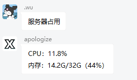

XBridgeR
使用正则表达式可以让您更方便，更直接的使用XBridgeR
例如可以查询服务器占用情况

更多用法等待您的探索
正则主体
XBridgeR的正则表达式文件是一条正则表达式链，内有多个正则成员
一个标准的正则成员应该包括Regex,permission和out
[
{
"Regex": "^服务器占用$", //正则表达式主体
"permission": 0, //执行权限，0为所有人，1为XBridgeR管理员
"out": [
{
"type": "group", //执行模式，即下文的XB_API
"text": "CPU：%COMPUTER_CPU_PERCENT%%\n内存：%COMPUTER_RAM_USED%G/%COMPUTER_RAM_TOTAL%G（%COMPUTER_RAM_PERCENT%%）"
}
]
}
]
XB_API
注意：部分API需要Bot有相关权限
| 执行模式 | 行为 | 注意 |
|---|---|---|
| runcmd | 执行命令 | |
| runcmdall | 向所有服务器发送指令 | |
| textall | 向所有服务器的玩家发送信息 | |
| group | 向群聊中发送讯息 | 默认向触发群聊发送 |
| xb_wl_add | 向XBridge的白名单列表添加白名单 | text即为添加的白名单 |
| xb_wl_remove | 从XBridge的白名单列表中移除 | 默认移除发言者 |
| xb_cmd | 执行XBridge原生命令 | 执行结果默认发送到主群 |
| http_get | 发起一个异步远程HTTPGET请求 | text即为远程地址 |
XB_Placeholder
正则表达式可用的占位符
MEMBER类
| 占位符 | 替换结果 | 注意 |
|---|---|---|
| %MEMBER_XBOXID% | 发言者位于XBridge白名单所登记的xboxid | 如果玩家没有登记记录则不会替换 |
| %MEMBER_QQ_NICK% | 发言者位于群聊中的名称 | |
| %MEMBER_QQ_ID% | 发言者QQ号 | |
| %MEMBER_QQ_LEVEL% | 发言者群等级 | 获取失败为0级 |
AT类
| 占位符 | 替换结果 | 注意 |
|---|---|---|
| %AT_QQ_ID% | 被@成员的QQ号 | 如果没有则不会替换 |
| %AT_MEMBER_XBOXID% | 被@成员的xboxid | 如果没有记录则不会替换 |
| %AT_MEMBER_QQ_NICK% | 被@成员的名称 |
UTILS类
| 占位符 | 替换结果 | 注意 |
|---|---|---|
| %UTILS_RANDOM% | 一个1到100的随机数 |
DATETIME类
| 占位符 | 替换结果 | 注意 |
|---|---|---|
| %DATETIME_NOW% | 当前时间字符串 | 2021-10-31 21:17:33 |
| %DATETIME_NOW_DATE% | 当前日期年月日部分 | 2021-10-31 |
| %DATETIME_NOW_TIME% | 当前日期时间部分 | 21:17:33 |
| %DATETIME_NOW_MONTH% | 当前日期月份部分 | 10 |
| %DATETIME_NOW_DAY% | 当前日期是一个月第几日 | 31 |
| %DATETIME_NOW_HOUR_12% | 当前小时（12小时制） | 9 |
| %DATETIME_NOW_HOUR_24% | 当前小时（24小时制） | 21 |
COMPUTER类
| 占位符 | 替换结果 | 注意 |
|---|---|---|
| %COMPUTER_RAM_LESS% | 计算机物理内存剩余量 | |
| %COMPUTER_RAM_TOTAL% | 计算机物理内存总量 | |
| %COMPUTER_RAM_USED% | 计算机物理内存使用量 | |
| %COMPUTER_RAM_PERCENT% | 计算机物理内存使用百分比 | |
| %COMPUTER_CPU_PERCENT% | 计算机CPU使用率百分比 | |
| %COMPUTER_CPU_COUNT% | 计算机CPU核心数 | |
| %COMPUTER_OS_BIT% | 计算机操作系统位数 | |
| %COMPUTER_OS_VERSION% | 计算机操作系统版本 |